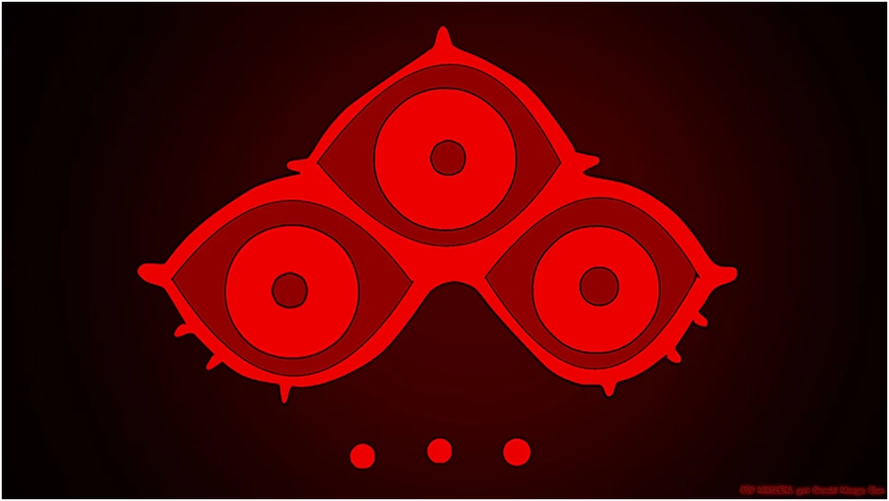
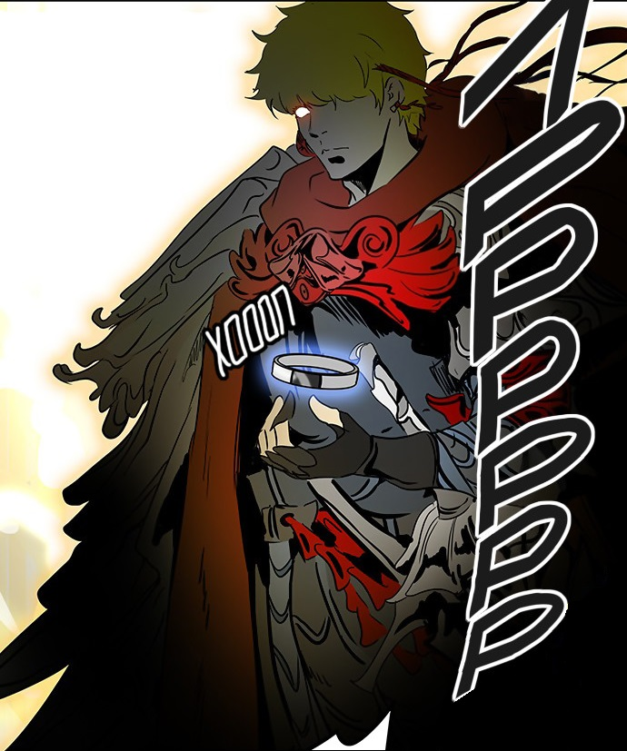
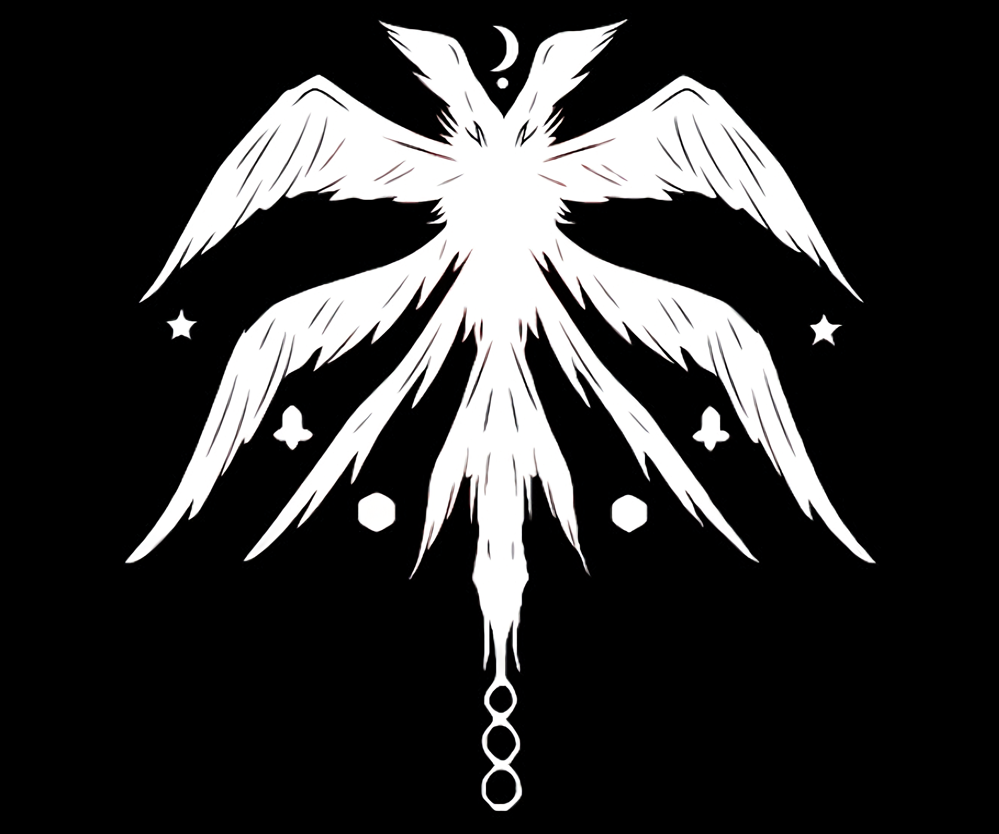

Империя Захарда - это сильнейшая группировка, занявшая 134 этажа в башне.Захард - нынешний правитель 134 этажей башни, которые были изучены. Давным-давно, Захард и десять глав других семей пришли откуда-то вне башни. Им удалось войти в башню и подняться на неё, победив стража на каждом этаже башни до 134 включительно. Но они не смогли завоевать 135 этаж, таким образом, Захард и десять глав семей создали свою империю. Хранителями этажей им было дано право на проведение тестов от имени Хранителей.
Король
Империя Захарда возглавляется королём Захардом. С момента основания империя доминировала на всех первых 134-х этажах Башни.

Захард является знаменитым Королём Башни и занимает третье место в табеле о рангах. В настоящее время бездействует, но за него правят лорды. Технически является незаконным, но этот термин к нему неприменим т. к. на момент его покорения Башни такого термина ещё даже не существовало. Основал свою империю. Является бессмертным (для избранных) из-за контракта с хранителем. Суть контракта такова: "Никто, рожденный в башне не сможет убить его".
Три лорда
Даже если Захард и считается правителем всей Башни, то в настоящее время он отдыхает. Его представляют три лорда, которые по очереди правят на его месте каждые 1000 лет. Три лорда имеют высочайший авторитет среди всех политиков в Башне. Их имена: Молик, Жу Чон и Флакс. В настоящее время Молик находится у власти.
Три Лорда - это особая группа людей, которые по очереди правят каждые 1000 лет над Империей Захарда. Три Лорда - это довольно старая организация, которая существует с самого начала создания Империи в Башне и считается, что стебли с три глаза на гербе Захарда символизируют именно их. Хотя позже можно заметить маску на лице образа молодого Захарда, на Скрытом Этаже, так что этот Герб был у Захарда и раньше и носит ещё какой то смысл. Три Лорда - это Высшая власть в политическом строе Башни, и последнее слово по любым важнейшим вопросам на Собрании Правителей всегда за этими тремя. Чтобы не быть связанными каким либо долгом перед своей Семьей и быть полностью беспристрастными, они отказались от своих фамилии и используют только имена (и прозвища):
Директора этажей
Директора получают возможность управлять испытаниями на этажах с разрешения хранителей. Так как большинство этажей были завоеваны Захардом и великими семьями, то можно сделать вывод, что почти каждый директор связан с империей Захарда.
.jpg "FUG")
FUG является смутной организацией, состоящей из различных перебежчиков десяти великих семей, которым они желают уничтожения. Именно под руководством Грейс Мирцеа Ласлек, который поднялся на башню вместе с Захардом. Социальная иерархия FUG вращается вокруг Убийц, которые рассматриваются как «боги», некоторые могущественные существа, предназначенные для уничтожения глав семей. FUG считает, что Баам имеет способность убивать глав семей и таким образом хочет использовать его для своих собственных целей, игнорируя его волю. Также с FUG каким-то образом связан хранитель 1-го этажа Хеадон. Также хранитель второго этажа.
Основаетли: V, Грейс Арлен и Грейс Мирцеа Ласлек

Полное название - Крылатое дерево под луной. Эта организация была создана Уреком Мазино и Бак Рьюн с целью найти выход из башни. Она была описана как имеющая силу, эквивалентную одной из десяти семей. "Крылатое дерево" не желает свергнуть десять семей. Она также была описана как группа более схожая с социальным клубом, чем с одной из знатных семей. В ходе истории, "Крылатое дерево" становится заинтересованной в Бааме, и вмешивается в течение турнира на 2 этаже, в целях защиты Баама от FUG.
Подпольная организация занимающаяся исследовательской деятельностью. Время от времени на 36 этаже, проводится Битва при мастерской, в которой участники могут выиграть разные интересные предметы.